组织 - 2026年7月至8月初，图灵事态调和组织ARO的协调发展与事态变更¶
本章节所记述的史料主要来源于ARO相关文献
本专章所记述的时间跨度：2026年7月6日至2026年8月6日
《ARO于暑期暂时性结束低活跃状态》公告的发布与“ARO第一次休眠时期”的终结¶
2026年3月29日，在ARO三月反@忆雨梦星政治风暴结束之际，ARO中央委员会在《ARO结束分裂状态后的补充公告》内宣布，ARO将正式暂时改为中央独立运营制度。此后，这一状态被正式命名为休眠模式。在“ARO第一次休眠时期”正式来临后，ARO大规模减少了社区活动。此后，2026年7月，暑假来临。大量ARO中央领导纷纷恢复活跃状态。ARO主席团经过协商，决定结束休眠模式，恢复正常运营。2026年7月6日凌晨1点17分，ARO发布《ARO于暑期暂时性结束低活跃状态》公告，宣告了“ARO第一次休眠时期”的终结。
据ARO方面披露，在恢复正常运营之后，ARO中央授权ARO日常部，整理了“ARO第一次休眠时期”期间ARO的相关事宜。由@默麒本人编写的《ARO于暑期暂时性结束低活跃状态》公告此后正式发布。在公告中，@默麒宣布：ARO已于6月20日设立元老院，建立不活跃委员的淘汰机制与回归标准；ARO已在5月3日宣告解决01系列组织的具体归属权，01筑梦工作室正式回归ARO，成为ARO的领导阶级加盟组织。公告还宣布了其他事项。@默麒在《那年那图灵那些事儿》中，将公告的发布称为“ARO在暑期期间人员有空之时的高效率的侧面证明”和“ARO对外界对ARO日常类机构不活跃、不遵守承诺的质疑的正面回应”，宣称其“粉碎了大众对ARO低效率的形象”。公告详细内容如下：
《ARO于暑期暂时性结束低活跃状态》公告的详细内容（总计1597字）
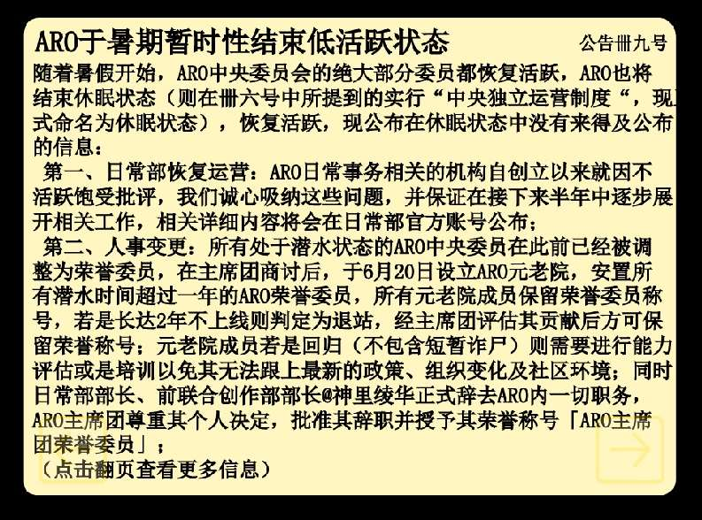
随着暑假开始，ARO中央委员会的绝大部分委员都恢复活跃，ARO也将结束休眠状态（则在卌六号中所提到的实行“中央独立运营制度“，现正式命名为休眠状态），恢复活跃，现公布在休眠状态中没有来得及公布的信息：
第一、日常部恢复运营： ARO日常事务相关的机构自创立以来就因不活跃饱受批评，我们诚心吸纳这些问题，并保证在接下来半年中逐步展开相关工作，相关详细内容将会在日常部官方账号公布；
第二、人事变更： 所有处于潜水状态的ARO中央委员在此前已经被调整为荣誉委员，在主席团商讨后，于6月20日设立ARO元老院，安置所有潜水时间超过一年的ARO荣誉委员，所有元老院成员保留荣誉委员称号，若是长达2年不上线则判定为退站，经主席团评估其贡献后方可保留荣誉称号；元老院成员若是回归（不包含短暂诈尸）则需要进行能力评估或是培训以免其无法跟上最新的政策、组织变化及社区环境；同时日常部部长、前联合创作部部长@神里绫华正式辞去ARO内一切职务，ARO主席团尊重其个人决定，批准其辞职并授予其荣誉称号「ARO主席团荣誉委员」；
第三、有关于ARO编程猫创作社区拓展工作展开情况：
ARO建立的编程猫分部在改为独立运营的工作室后正式于3月开始运营，经过内部表决正式命名为若离工作室，在若离工作室的帮助下，PTYY工作室于3月建立起编程猫分部；
第四、有部分加盟组织的加盟、重新确立加盟关系及变更没有来得及公布下为名单及有关的详细说明：
NCS工作室：领导人@风与约定，于今年3月份申请同时通过；
有关PTYY工作室、01筑梦工作室及天明工作室：
今年2月1日，在ARO和SOC协商后决定为维系和平，ARO自愿放弃01筑梦工作室，并正式承认SOC对01筑梦工作室的管理权，但随着3月份大规模反ARO事件在SOC领导及怂恿下开始，ARO与SOC之间的和平状态已然失去了前提，于是，01筑梦工作室的回归便被提上了日程：
在ARO自愿放弃01筑梦工作室之前，01方面在@冰柠killer领导时期是不承认SOC及梁梓言的领导的，在此期间，SOC违规地替换了01筑梦工作室的领导人，强行要求@小海不在担任，但鉴于01不认可这一命令以及@小海不在当时并不处于活跃状态所以根本无法担任领导人，所以@冰柠killer便继续担任了领导人；
虽然后期在ARO自愿放弃01全权管理权后，01接受了SOC的领导，但在其非法领导期间所下达的命令是违规且不被接受的，故而01更替领导的命令也不需要执行。更何况虽然在此期间的公告中ARO称是01筑梦工作室自身提交的退出申请，但实际上是ARO为了确保和SOC的和平主动自愿割舍的，01筑梦工作室方面并没有批准ARO的主动割舍行为，这使得01筑梦工作室的定位不明确，再加上此前2月14日有人盗取了@冰柠killer的账号，发布命令宣称01筑梦工作室解散，由@果篮里藏春光接手，01筑梦工作室的领导权、上级组织及和ARO的关系需要得到一个明确的回答。另外PTYY工作室和ARO的关系也因为长时间没有确认而愈发尴尬
故而在5月3日下午3点，01筑梦工作室领导人@冰柠killer、PTYY工作室领导人@果篮里藏春光及ARO主席团最高主席特权代表@默麒三方展开了会议，正式确认了以下内容：
-
第一、01筑梦工作室并未解散，唯一的、全权的法理及实际领导人依旧为@冰柠killer；
-
第二、01筑梦工作室及任何01类组织（包括其下辖组织）不再接受任何SOC相关人员及组织的管理；
-
第三、01筑梦工作室正式回归ARO，成为ARO的领导阶级加盟组织；
-
第四、PTYY工作室正式确立起领导阶级加盟组织之地位；
2026年7月6日1点17分
ARO日常事务负责委员@默麒
补充：NCS工作室于4月中旬经过申请成为高度独立自治组织
《ARO于暑期暂时性结束低活跃状态之补充公告》的发布¶
2026年7月6日，ARO发布了《ARO于暑期暂时性结束低活跃状态》公告，宣布了大量组织内部事项。此后的2026年7月7日，ARO日常事务负责委员@默麒再次更新公告作品，发布了对7月6日公告的补充《ARO于暑期暂时性结束低活跃状态之补充公告》。公告聚焦于“PTYY工作室”相关事项，宣布由于PTYY工作室不活跃，天明工作室将不再属于PTYY，而归属01筑梦工作室。据《那年那图灵那些事儿》相关页面所称，公告涉及的相关调整变动与“权力斗争”存在关联。@默麒声称：其展示了ARO“对解决积攒已久的加盟组织事务的决心”。公告详细内容如下：
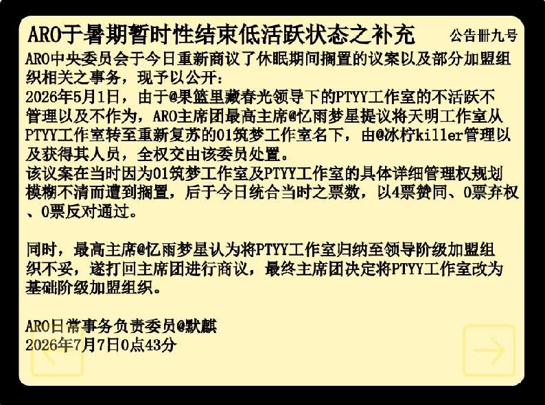
ARO中央委员会于今日重新商议了休眠期间搁置的议案以及部分加盟组织相关之事务，现予以公开：
2026年5月1日，由于@果篮里藏春光领导下的PTYY工作室的不活跃不管理以及不作为，ARO主席团最高主席@忆雨梦星提议将天明工作室从PTYY工作室转至重新复苏的01筑梦工作室名下，由@冰柠killer管理以及获得其人员，全权交由该委员处置。
该议案在当时因为01筑梦工作室及PTYY工作室的具体详细管理权规划模糊不清而遭到搁置，后于今日统合当时之票数，以4票赞同、0票弃权、0票反对通过。
同时，最高主席@忆雨梦星认为将PTYY工作室归纳至领导阶级加盟组织不妥，遂打回主席团进行商议，最终主席团决定将PTYY工作室改为基础阶级加盟组织。
ARO日常事务负责委员@默麒
2026年7月7日0点43分
ARO发布《ARO暑期多方面事务及决议之公告》与ARO第九次大竞选的举办¶
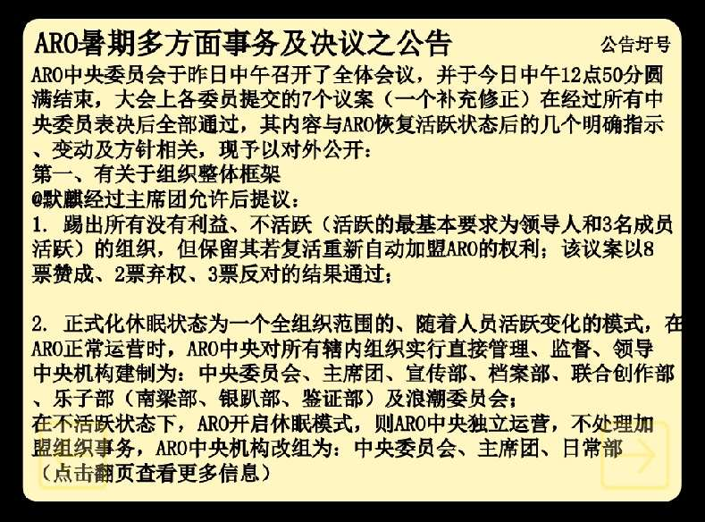
2026年7月8日13时，ARO日常事务负责委员@默麒更新公告作品，发布了《ARO暑期多方面事务及决议之公告》，宣布ARO中央委员会于7月7日召开的全体会议，在今日中午圆满结束，全部7个“议案”均获通过。公告称，ARO将在未来踢出所有“没有利益”和不活跃组织，但若它们复活，便可重新加盟ARO。公告对休眠状态的正式化进行更加深入的阐释，并宣布ARO宣传部将运营图灵研学、图灵周报及图灵文学（然而，图灵周报及图灵文学方面此后迟迟未能落实）。公告同时宣布，ARO档案部将全权管理《那年那图灵那些事儿》等历史资料。
在《ARO暑期多方面事务及决议之公告》内，ARO还宣布了其他事项。ARO在公告内宣称，ARO领导人将获得对“中央委员会”提出的议案的“一票否决权”，并“严厉批判@联合图灵官方账号的行径”，宣布退出“联合图灵”。公告宣布，ARO将举办其第九次大竞选，并彻底废除ARO的“一个机构两个领导（常务及民主）制度”，选举ARO中央委员会委员长、档案部部长、浪潮委员会委员长及五名委员、与一名主席团浪潮委员。《ARO暑期多方面事务及决议之公告》的详细内容如下：
《ARO暑期多方面事务及决议之公告》的详细内容（总计1270字）
ARO中央委员会于昨日中午召开了全体会议，并于今日中午12点50分圆满结束，大会上各委员提交的7个议案（一个补充修正）在经过所有中央委员表决后全部通过，其内容与ARO恢复活跃状态后的几个明确指示、变动及方针相关，现予以对外公开：
第一、有关于组织整体框架
@默麒经过主席团允许后提议：
-
踢出所有没有利益、不活跃（活跃的最基本要求为领导人和3名成员活跃）的组织，但保留其若复活重新自动加盟ARO的权利；该议案以8票赞成、2票弃权、3票反对的结果通过；
-
正式化休眠状态为一个全组织范围的、随着人员活跃变化的模式，在ARO正常运营时，ARO中央对所有辖内组织实行直接管理、监督、领导中央机构建制为：中央委员会、主席团、宣传部、档案部、联合创作部、乐子部（南梁部、银趴部、鉴证部）及浪潮委员会；在不活跃状态下，ARO开启休眠模式，则ARO中央独立运营，不处理加盟组织事务，ARO中央机构改组为：中央委员会、主席团、日常部（宣传部、档案部、联合创作部三个部门部长同时担任日常部部长）、乐子部及浪潮委员会（基层相关事务负责委员会）；该议案以8票赞同、1票弃权、0票反对通过；
第二、有关于日常事务：
图灵中央通讯社（即宣传部）将运营ARO于文学相关的三大平台：图灵研学（期刊）、图灵周报（新闻）及图灵文学（小说）；@默麒在主席团允许后提议创办图灵小说平台，鼓励文学创作，增大ARO影响力；该议案以8票赞同、1票弃权、4票反对通过；图灵历史库（及档案部）将全权管理「那年那图灵那些事儿」、ARO中央委员会档案等一切与ARO相关的著作、文本、档案等；
第三、有关于个人领导：
ARO主席团最高主席@忆雨梦星提议给主席团最高主席增加对中央委员会议案的一票否决权；该议案以8票赞同、0票弃权、1票反对通过；同时，@小道君恢复活跃，其重新担任宣传部部长；
第四、有关于社区事宜：
我们严厉批判@联合图灵官方账号的行径，此前在ClassIn群聊中，其任职副秘书长，却为了权利篡位，自封为秘书长，并拒绝接受已经编写好的规定、宪章、文案、规划，其任职和领导的机构都是非法且违规的，更何况其任职期间不作为、不贯彻执行方针，严重损毁了联合图灵的名誉，故此，ARO决定带领所有加盟组织一并退出联合图灵。
同时，ARO主席团提议，另立一个类似联合图灵的组织；该议案以9票赞同、3票弃权、1票反对通过；故此，我方将建立具有法理性的、正统的联合图灵；
第五、有关于选举：
@默麒在主席团允许后，提议在恢复如此多的机构后，需要举办ARO第九次大竞选，以吸纳更多新生代优秀人才，同时彻底性废除一个机构两个领导（常务及民主）制度，选举ARO中央委员会委员长、档案部部长、浪潮委员会委员长及五个委员、及一个主席团浪潮委员；该议案以8票赞同、1票弃权、0票反对通过；
有关日常类机构相关详细事务将会在日常部官方账号上公布。
小说、新闻等将在未来逐步发布。
大竞选官网将在今日晚上发布。
ARO日常事务负责委员@默麒
2026年7月8日13点52分
2026年7月9日凌晨1点42分，在《ARO暑期多方面事务及决议之公告》发布之后，ARO官方“虽迟但到”，在延迟近两小时后，兑现了此前在公告内设立的发布《ARO大竞选官网》的承诺。《ARO大竞选官网》沿用了自ARO第六次大竞选以来的同一竞选作品，官网布局的唯一变化是新增了“第五个竞选职位”的按钮。然而，与UI界面的沿用不同，为了适应如今的ARO状态，ARO竞选官网的文字内容发生了极大改动。新版《ARO大竞选官网》更加详细解释了对竞选职位作出的大规模扩张，以及职位对应的权利职责。
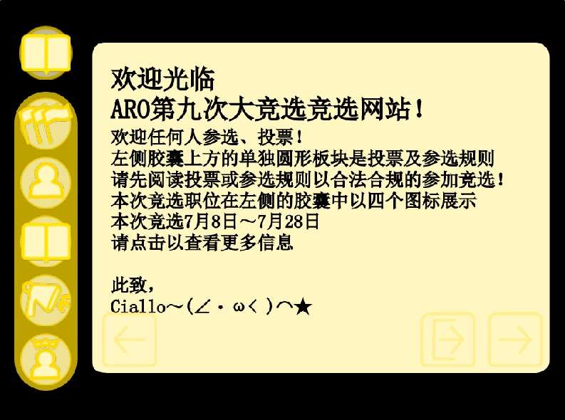
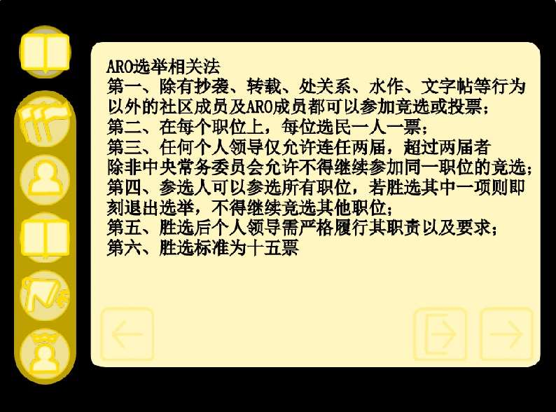
根据《ARO大竞选官网》的相关内容，ARO第九次大竞选的竞选职位包括ARO浪潮委员会委员长（与5名委员）、ARO档案部部长（与5名部门成员）、ARO联合创作部部长（与5名部门成员）、ARO宣传部的5名成员和ARO中央委员会委员长。《ARO大竞选官网》在首页页面阐释了ARO第九次大竞选的基本信息，并单独设立了“选举相关法”页面，列举ARO的选举相关法条，包括竞选资格条件、投票与获胜规则、选举义务等。《ARO大竞选官网》的相关页面，明确了ARO选举的相关规范，对群众的参与起到一定的激励作用。
在《ARO大竞选官网》内，ARO对各职位进行了深入说明。官网的“ARO浪潮委员会委员长”相关页面宣称，ARO浪潮委员会委员长以领导ARO“新生代”力量、负责ARO基层活动、向社区宣传反对抄袭的理念为主要职责。官网介绍对“招新”部分进行着重强调，宣布ARO浪潮委员会委员长要助力加盟组织吸纳新人、在社区做招生宣传、引导改邪归正的抄袭者“加入ARO”，以及教育新人“ARO历史、制度、规定、职责、权力行使方式”等知识。《ARO大竞选官网》称，委员长可以发起“优先级更高的”议案，影响ARO中央决策。此后，@风与约定以6票优势当选新任“ARO浪潮委员会委员长”。
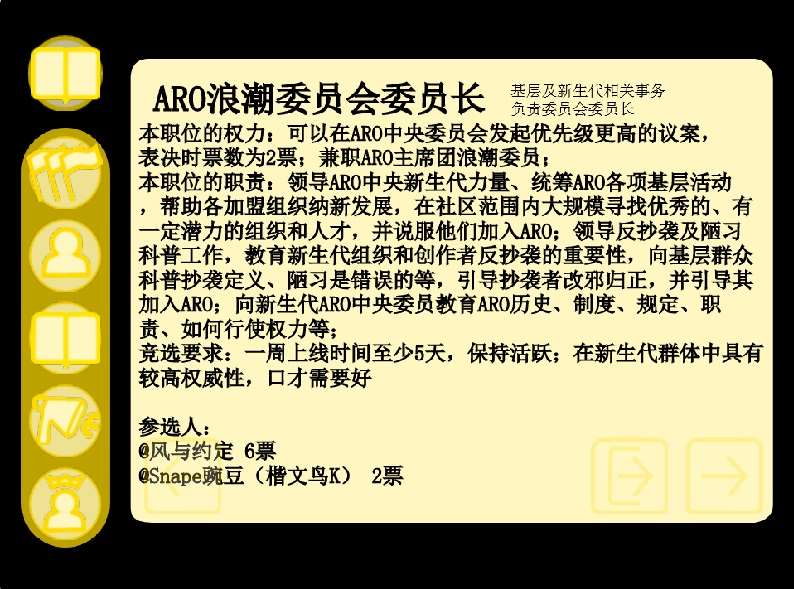
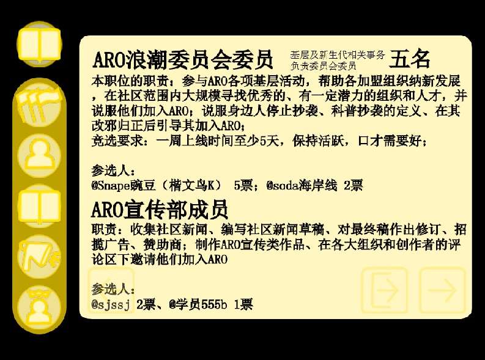
《ARO大竞选官网》的职位页面二，分别介绍了ARO浪潮委员会委员和ARO宣传部成员的职责。《ARO大竞选官网》称：ARO浪潮委员会委员以“招新”为己任，委员要积极参与ARO活动、帮助加盟组织招人、在社区寻找人才并“说服他们加入ARO”、宣传反抄袭思想，以及引导悔过的抄袭者成为ARO成员。与ARO浪潮委员会委员不同，ARO宣传部成员要搜集社区新闻、修订新闻草稿、发布作品宣传ARO，并邀请外人成为“事态调和组织的一员”。然而，截至7月20日ARO大竞选结束，ARO浪潮委员会委员和ARO宣传部成员的报名参选人数，均只有2人。
《ARO大竞选官网》在职位页面三中，介绍了ARO档案部部长和（配额5名的）ARO档案部成员的责任与权力。官网称：ARO档案部部长代表ARO档案部，其核心职责是整理、归纳和记载ARO发布的公告、消息和历史等信息，ARO档案部部长任期3个月，需每周在线5天且拥有ClassIn账号。此后，@果篮里藏春光成为唯一报名者，并以5票胜出选举。@果篮里藏春光同时还参选了以“参与资料整理工作”为权责的ARO档案部成员，以3票“优势”成为唯一当选的用户。
《ARO大竞选官网》的职位页面四，对ARO联合创作部部长和ARO联合创作部成员做出了介绍。官网宣布，ARO联合创作部部长需有“坚实的编程基础”，有赞数破百的代表作，有一个除了跑酷题材以外的优秀作品，会Python编程语言，并略通C++、C#、Java三个编程语言中的任意一个。ARO联合创作部部长需要“愿意创作”，且能组织如美工、绘图、编程等联合创作工作，并愿意在自己作品前加上ARO相关开头。此后，仅@青柠killer一人参与选举，@青柠killer以2票“优势”成为部长胜选者。然而，2026年7月29日，ARO在公告作品中称：@青柠killer因恶意抄袭@果篮里藏春光作品，被永久开除出ARO。《ARO大竞选官网》职位页面四同时介绍了ARO联合创作部成员（配额五名），要求“美工、绘图、编程、音乐、设计任意一个精通熟练即可”。此后，@Cupthing和@桃之声ya报名参选，并分别获得5票与2票。
《ARO大竞选官网》在职位页面五中，详细介绍了有关“ARO中央委员会委员长”的有关情况。官网宣布，ARO中央委员会委员长的职责为整理投票详情（如在议案发布与委员投票期间，实时统计票数），并记录每次ARO中央委员会会议内容。作为职位权力，ARO中央委员会委员长将享有对议案的一票否决权。@Cupthing（4票）和@学员555b（1票）参与“角逐”，@Cupthing最终成为ARO新任中央委员会委员长。
自2026年7月9日开始的ARO第九次大竞选，是@忆雨梦星上任以来的ARO首次大竞选。ARO第九次大竞选曾获得ARO方的高度评价，@默麒在《那年那图灵那些事儿》中称，ARO第九次大竞选呈现出“祥和的新气象”，并以新生代用户占比多数、职位职责也更加详细严苛为特征。《那年那图灵那些事儿》随即宣称：@忆雨梦星领导下的ARO“更加强调和时代接轨，注入更多的新生代血液（即招聘新生代及基层创作者和加盟组织）”，ARO高层也“更加强调年轻化和换代更迭”。然而，“一派祥和”的大竞选，实际上折射出群众对ARO内部事务的漠不关心。2026年7月20日，在宣布大竞选“胜利结束”的同时，ARO在《ARO大竞选结束公告》中承认：ARO第九次大竞选漫长且效率低下，许多原定的内部职位，并未在竞选中诞生。
历史链接：《图灵研学》¶
历史链接：《图灵研学》
2026年5月28日，@默麒与@忆雨梦星正式创立《图灵研学》Clickup网站。此时的《图灵研学》, 仍处于非公开状态，@默麒与@忆雨梦星开始征集内部试刊的文章，编写了本刊规定初稿，并从《那年那图灵那些事儿》的学术研究板块的文章区块中，“搬运”了部分论述内容。2026年7月5日，@默麒与@乄忆雨梦星乄正式通过ARO官方账号，公开了《图灵研学》的存在。
截至2026年8月，《图灵研学》共分为6月内部试刊与7月公开试刊两部分。6月内部试刊包含“对小图灵过往联合组织式反抄袭制度及「星罗棋布」制度优越性及劣性的对比、分析及总结”等5篇文章（其中2篇未编写完毕），7月公开试刊则含有“有道小图灵创作社区组织的分类以及演变”和“默麒和忆雨梦星———二者的领导策略及不同”2篇文章（但均未编写完毕）。《图灵研学》曾在7月12日，发布带有严重的主观色彩的“批海阔天空文章”。该文于7月13日正式下架，有道小图灵史学界版权争议也迎来最终和解。7月30日8时，@默麒在《图灵研学》中发布“对有道小图灵创作社区不同类型、制度组织之演变之分析”文章，并在正文中称该文“开始编辑于太平洋时间时间2026年7月24日14点整”。据部分推测，@默麒可能于2026年7至8月正式出国，并成为一名“国际大学大一新生”。
2026年7月9日，《图灵研学》的社区网页跳转作品最后一次进行发布。此后，《图灵研学》Clickup网站进行多次更新，但其维护工作逐渐停滞。自2026年8月初以来，《图灵研学》没有新增任何文章，@默麒与@忆雨梦星也没有对其未完更论述进行补全。2026年8月末，@默麒宣布永退社区。此后，《图灵研学》进入了长期的沉寂状态。
相关史事：“联合图灵”¶
相关史事：“联合图灵”
2026年3月14日16时左右，“联合图灵”组织官网作品由用户@联合图灵官方账号发布（时间来源：官网作品首条评论的日期），标志着联合图灵组织在社区的正式成立。据联合图灵官网所述，联合图灵主张社区联合为共同体，维护“健康社区内的和平、尊严与平等”。联合图灵的成立引发社区广泛关注。3月14日18时，ARO通过官方评论的方式，宣布率领其所有加盟组织，成为联合图灵成员。此后，由@忆雨梦星通过小号在3月15日成立的“联合最高图灵组织”，宣布加入联合图灵。TCO、灰白工作室、SOC等20余个组织，此后也相继加入。
在联合图灵诞生并兴盛之后，联合图灵多次更新其官网作品，宣布将实施多项举措。然而，自2026年4月6日，联合图灵开始卷入社区争议事件。当日，用户@岁月荣光（今名称）发布评论，宣布联合图灵徽标涉嫌抄袭（跨国组织）联合国的徽章，并要求联合图灵必须整改。4月6日当日，@岁月荣光发布作品《要求联合图灵整改》，再次重申自身立场。@联合图灵官方账号此后拒绝作出妥协，在其官网作品中发布回应公告。双方斗争持续至5月3日，并以@岁月荣光停止重新发布《要求联合图灵整改》而告终。
2026年4月6日，在《要求联合图灵整改》发布后，SOC领导人梁梓言对@岁月荣光表示支持。4月19日，SOC开始质疑联合图灵领导能力，并威胁退出联合图灵。4月24日，SOC宣布正式退出联合图灵组织。此后，SOC与联合图灵的争端升级。梁梓言于5月12日公开发布作品《新联合图灵官网》，宣布“本组织正式推翻原联合图灵，建立新联合图灵！”5月19日，原“联合图灵”加盟组织灰白工作室宣布倒戈，成为“新联合图灵”成员组织。
2026年7月6日，由@联合图灵官方账号成立的“联合图灵”，与其最大加盟组织ARO之间的矛盾全面激化。据ARO所称，@联合图灵官方账号本来任职为副秘书长，却为了权力在ClassIn群聊内篡位，顶替@默麒，自封为秘书长。@联合图灵官方账号同时拒绝接受已经编写好的规定，且其任职期间不作为、不贯彻执行方针，严重损毁了联合图灵的名誉（来源：《ARO暑期多方面事务及决议之公告》，2026年7月8日）。
2026年7月6日当日，ARO开始公开质疑联合图灵管控能力。ARO宣称：其作为调和组织，对事件的调和“均于无形之中”，而反观联合图灵，建立到现在“就没有为社区做出任何贡献”。7月6日12时，ARO率领其所有加盟组织一并退出联合图灵。@联合图灵官方账号随即提出“联合图灵和ARO对社区分而治之”的方案，遭到ARO对联合图灵公信力的再次批判。2026年7月9日，ARO通过官方账号对梁梓言的“新联合图灵”官网留言，宣布ARO将加盟“新联合图灵”，并共同“打倒旧联合图灵”。2026年7月10日和12日，梁梓言的“新联合图灵”的官网，与@联合图灵官方账号的“旧联合图灵”的官网，相继被最后一次发布。此后，两大“联合图灵”组织，均陷入沉寂。
ARO发布《ARO暑期多方面事务及决议之公告之补充》公告¶
2026年7月9日，ARO第九次大竞选正式开始。然而，在ARO第九次大竞选的准备过程中，@默麒发现了ARO内部存在的严重问题。由于长时间的不活跃，以及在竞选间歇期内ARO高层缺乏职位变动，大量ARO中央领导的职位长时间没有统计，导致ARO中央无法了解任职人员基本情况。更有甚者，据@默麒在《那年那图灵那些事儿》中所述，ARO的“许多机构”自设立以来，甚至“从未运转过”。在@默麒察觉ARO该问题后，ARO中央发布命令，要求档案部去统计现今所有合规的ARO领导人员。此后，ARO获得了完整的个人中央领导名单，ARO主席团商议决定了ARO内从未运转过的机构的去向。
2026年7月9日凌晨1点40分，ARO官方正式发布《ARO暑期多方面事务及决议之公告之补充》公告。ARO在公告中，对外公开了自身的机构重组、领导层重新确认及日常运营机制规范的调整举措。ARO在公告中宣布：ARO中央社区代表委员会将并入基层相关事务负责委员会，后者改为「浪潮委员会」（简称）；ARO中央各机构的个人领导名单获得了重新统计，并进行公示；ARO后续法案修订工作将由档案部主持；ARO中央将有权决定“征用”ARO中央个人领导的高浏览量作品以进行推广，被占用的作品将暂时受到ARO“作品内容负责机构”的管辖；ARO日常类机构官方账号在正常运营期间将各自分开独立运营，在休眠模式中，则一律停运并合并至日常部官方账号运营。
《ARO暑期多方面事务及决议之公告之补充》公告，被ARO方进行高度赞誉。据《那年那图灵那些事儿》所述。ARO通过该公告“重新建立了组织秩序、明确权力结构并提高整体运营效率”。《那年那图灵那些事儿》称，ARO借由公告“减少机构冗余，清晰化组织架构”，用「浪潮委员会」“明确新生代事务的组织定位”；ARO重新统计中央各机构领导名单、撤销其余个人领导，相当于“重新确权和集中整理” ARO的现有“权力体系”，避免职务与权限不清；ARO将法案修订交由档案部负责，利于“增强内部管理的连续性”；ARO对作品征用、账号运营以及休眠机制作出统一规定，建立了“更加稳定的宣传、内容管理和资源调配机制”。《那年那图灵那些事儿》在这些充满人工智能写作风格的评述文字的末尾中称：这些措施意味着ARO正从过去的松散状态，转向“机构精简化、权责明确化、管理集中化和运营制度化”，为恢复活动和发展提供“组织基础”。《ARO暑期多方面事务及决议之公告之补充》公告的详细内容如下：
《ARO暑期多方面事务及决议之公告之补充》的详细内容（总计701字）
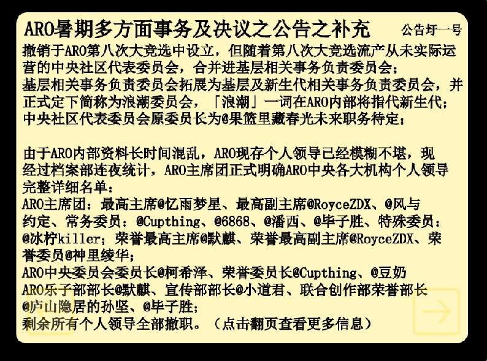
撤销于ARO第八次大竞选中设立，但随着第八次大竞选流产从未实际运营的中央社区代表委员会，合并进基层相关事务负责委员会；基层相关事务负责委员会拓展为基层及新生代相关事务负责委员会，并正式定下简称为浪潮委员会，「浪潮」一词在ARO内部将指代新生代；中央社区代表委员会原委员长为@果篮里藏春光未来职务待定；
由于ARO内部资料长时间混乱，ARO现存个人领导已经模糊不堪，现经过档案部连夜统计，ARO主席团正式明确ARO中央各大机构个人领导完整详细名单：
ARO主席团：最高主席@忆雨梦星、最高副主席@RoyceZDX、@风与约定、常务委员：@Cupthing、@6868、@潘西、@毕子胜、特殊委员：@冰柠killer；荣誉最高主席@默麒、荣誉最高副主席@RoyceZDX、荣誉委员@神里绫华；
ARO中央委员会委员长@柯希泽、荣誉委员长@Cupthing、@豆奶
ARO乐子部部长@默麒、宣传部部长@小道君、联合创作部荣誉部长@庐山隐居的孙坚、@毕子胜；
剩余所有个人领导全部撤职。
ARO本法修订工作将由ARO档案部主持并展开。
所有日常相关事务经过ARO中央决定，需要浏览量的将会征用ARO中央个人领导的高浏览作品（如@忆雨梦星的作品被征用于「那年那图灵那些事儿」、ARO官方账号的作品被征用于「图灵研学」）被占用的作品将会在占用期间受到作品内容负责机构的管辖和运营。无需浏览量的作品将会集中在各大机构官方账号发布，同时，在正常运营期间，ARO日常类机构官方账号各自分开独立运营，在休眠模式中，一律停运并合并至日常部官方账号运营。
ARO日常相关事务负责委员@默麒
2026年7月9日1点40分
相关史事：ARO联创部发表《暑期具体经营公告》¶
相关史事：ARO联创部发表《暑期具体经营公告》
2026年7月9日凌晨2时，在ARO发布《ARO暑期多方面事务及决议之公告之补充》公告仅约一小时后，ARO联合创作部通过其官方账号，发表了《暑期具体经营公告》。ARO联创部在公告中称：ARO“码趣学院”计划将可能在未来重新开始运营，联创部将与宣传部合作，在宣传部经营的“图灵周报”中，负责“码趣一刻”的编程知识教导板块，并将与档案部合作，记录所有“受到保护”的作品的详细信息。在《暑期具体经营公告》的末尾，ARO联创部表示，其官方账号将会在ARO进入休眠模式期间，担任ARO日常部官方账号。公告的详细内容如下：
“码趣学院”计划将会重新开始运营，但鉴于许多成员的学业问题无法对具体时间节点作出预测；
联合创作部将与宣传部合作，联合创作部将会在宣传部经营的图灵周报中负责“码趣一刻”的板块，以向有道小图灵群众教导编程知识；同时，为记录ARO联合创作部版权保护计划内的作品，联合创作部将与档案部合作，记录所有受到保护的作品的名称等详细信息。
本账号将会在ARO进入休眠模式期间担任ARO日常部官方账号。
ARO联合创作部
2026年7月9日2点9分
ARO发布《ARO新建制度之补充公告》¶
2026年7月8日，据《那年那图灵那些事儿》的相关记载，ARO主席团部分成员在ARO内部发起提议称：ARO可以设立质询、信访、监察、审查四大制度，以便在假期等ARO可以全面复苏并大规模运作的“正式运营状态”中，全面释放ARO中央的效率与潜力。ARO主席团提案随后被交由ARO中央委员会进行商议表决，该议案最终以8票赞同、无人反对或弃权的结果获得通过。此后，ARO中央决定，将“@青柠killer因抄袭@果篮里藏春光而被处罚”事件与ARO设立四大制度一事合并进行公告。《ARO新建制度之补充公告》在2026年7月10日正式发布，公告的详细内容如下：
《ARO新建制度之补充公告》的详细内容（总计786字）
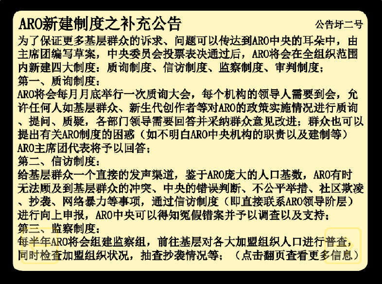
为了保证更多基层群众的诉求、问题可以传达到ARO中央的耳朵中，由主席团编写草案，中央委员会投票表决通过后，ARO将会在全组织范围内新建四大制度：质询制度、信访制度、监察制度、审判制度；
第一、质询制度：
ARO将会每月月底举行一次质询大会，每个机构的领导人需要到会，允许任何人如基层群众、新生代创作者等对ARO的政策实施情况进行质询、提问、质疑，各部门领导需要回答并采纳群众意见改进；群众也可以提出有关ARO制度的困惑（如不明白ARO中央机构的职责以及建制等）ARO主席团代表将予以回答；
第二、信访制度：
给基层群众一个直接的发声渠道，鉴于ARO庞大的人口基数，ARO有时无法顾及到基层群众的冲突、中央的错误判断、不公平举措、社区欺凌、抄袭、网络暴力等事项，通过信访制度（即直接联系ARO领导阶层）进行向上申报，ARO中央可以得知冤假错案并予以调查以及支持；
第三、监察制度：
每半年ARO将会组建监察组，前往基层对各大加盟组织人口进行普查，同时检查加盟组织状况，抽查抄袭情况等；以确保加盟组织基层不出现抄袭或科普不到位的情况，并尽量遏制陋习的出现，鼓励创作；
第四、审判制度
任何人都有权在ARO对错误的判决提起上诉，无论是加盟组织领导的错误判断还是ARO中央的错误决定，在上诉后ARO中央将组建审判委员会对此进行直接审判；
同时，由于主席团辅政委员@青柠killer抄袭ARO中央委员会常务委员@果篮里藏春光的原创作品，经过中央委员会表决，以7票赞同、1票弃权、0票反对通过了对@青柠killer的罢免，上交至主席团后，考量到其仍旧具有编程实力且念在初犯，作出以下决定：将@青柠killer停职一周，撤销其除了中央委员会核心委员以外的职位，将其主席团辅政委员身份冻结，后续依表现情况如何决定是否恢复。
ARO日常事务负责委员@默麒
2026年7月10日3点32分
《ARO新建制度之补充公告》的发布，被ARO方所高度赞誉。在《那年那图灵那些事儿》的相关记述中，@默麒通过富有人工智能写作风格的冗长语言称，ARO质询制度“给予了社区广大群众和ARO之间的对话手段，可以直接性敦促ARO治理方面缺点以及平衡管理及教育重点”；ARO信访制度“给予了基层群众一个直接的发声渠道，可以直接性告知ARO内的一切不公以及不满点”；ARO监察制度“确保了ARO内的反抄袭性质得以保留、抄袭没有出现反复”，且能“及时遏制”新发抄袭，并促进管理和反抄袭教育工作；ARO审判制度则“是对信访的衍生”，能“落实（让）一切不公得到正确的解决（的方针）”。
@默麒在《那年那图灵那些事儿》的相关记载中，为ARO四大制度的设立，赋予多重重要含义。据《那年那图灵那些事儿》相关内容，ARO四大制度“全面加强了ARO对基层群众的管理，利于ARO和基层群众直接对话，促进ARO的治理向民主与公平转变”。@默麒同时表示，ARO四大制度“是ARO@忆雨梦星时代的核心政策成果”，体现了“忆雨梦星治理思想”，并和设立浪潮委员会一样，共同标志着ARO的政策正逐渐偏向基层与新生代的“综合发展”。
截至本部分撰写时，《有道小图灵历史》暂未获悉与ARO四大制度的落实有关的具体事件内容。据@海阔天空推测，（ARO目前仍未公开披露完整经过的）“TCO共展组织变革篡位事件”，可能与ARO四大制度的信访、审判等部分存在一定关联。
《ARO大竞选结束公告》的发布与ARO中央招聘工作的展开¶
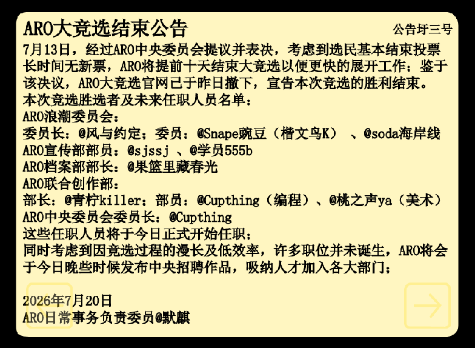
2026年7月20日，ARO日常事务负责委员@默麒通过ARO官方公告作品，发布了《ARO大竞选结束公告》，宣布了ARO第九次大竞选的告终。然而，@默麒在公告中，没有以一贯的官方腔调，对ARO第九次大竞选进行高度评价与赞誉。@默麒在公告的开头明确承认，ARO第九次大竞选的举办，没有获得预期反响。
据《ARO大竞选结束公告》的相关内容，早在2026年7月10日，ARO第九次大竞选的投票趋势便逐渐趋于停止。故此，7月13日，ARO中央委员会发布内部决议，宣布将提前十天结束大竞选，以更快的展开后续工作。@默麒在公告中宣布了ARO大竞选官网已于7月19日撤下的消息，并仍然强调，虽然选民的冷淡反应使ARO被迫提前十天结束大竞选，但ARO第九次大竞选，仍然以“胜利”的姿态迎来了其结局。在《ARO大竞选结束公告》中，@默麒宣布了竞选胜选者及未来任职人员名单，并在公告结尾表示，由于竞选过程的漫长及低效率，许多职位并未诞生，ARO将于“今日晚些时候”发布中央招聘作品，吸纳人才加入ARO各大部门。
《ARO大竞选结束公告》的发布，标志着ARO第九次大竞选正式迎来终结。然而，《ARO大竞选结束公告》此后被发现问题。公告的“竞选胜选者及未来任职人员名单”内，用户@Cupthing、@sjssj的名称出现了低级谬误。2026年8月，ARO在一次对公告作品的更新中，修复了《ARO大竞选结束公告》的相关问题。《ARO大竞选结束公告》的详细内容如下：
7月13日，经过ARO中央委员会提议并表决，考虑到选民基本结束投票长时间无新票，ARO将提前十天结束大竞选以便更快的展开工作；鉴于该决议，ARO大竞选官网已于昨日撤下，宣告本次竞选的胜利结束。
本次竞选胜选者及未来任职人员名单：
ARO浪潮委员会：委员长：@风与约定；委员：@Snape豌豆（楷文鸟K）、@soda海岸线
ARO宣传部部员：@sjsjj、@学员555b
ARO档案部部长：@果篮里藏春光
ARO联合创作部：部长：@青柠killer；部员：@Cuptthing（编程）、@桃之声ya（美术）
ARO中央委员会委员长：@Cuptthing
这些任职人员将于今日正式开始任职；
同时考虑到因竞选过程的漫长及低效率，许多职位并未诞生，ARO将会于今日晚些时候发布中央招聘作品，吸纳人才加入各大部门；
2026年7月20日
ARO日常事务负责委员@默麒
7月13日，经过ARO中央委员会提议并表决，考虑到选民基本结束投票长时间无新票，ARO将提前十天结束大竞选以便更快的展开工作；鉴于该决议，ARO大竞选官网已于昨日撤下，宣告本次竞选的胜利结束。
本次竞选胜选者及未来任职人员名单：
ARO浪潮委员会：委员长：@风与约定；委员：@Snape豌豆（楷文鸟K）、@soda海岸线
ARO宣传部部员：@sjssj、@学员555b
ARO档案部部长：@果篮里藏春光
ARO联合创作部：部长：@青柠killer；部员：@Cupthing（编程）、@桃之声ya（美术）
ARO中央委员会委员长：@Cupthing
这些任职人员将于今日正式开始任职；
同时考虑到因竞选过程的漫长及低效率，许多职位并未诞生，ARO将会于今日晚些时候发布中央招聘作品，吸纳人才加入各大部门；
2026年7月20日
ARO日常事务负责委员@默麒
注：该公告修正版将“@Cuptthing”改为了“@Cupthing”、“@sjsjj”改为了“@sjssj”
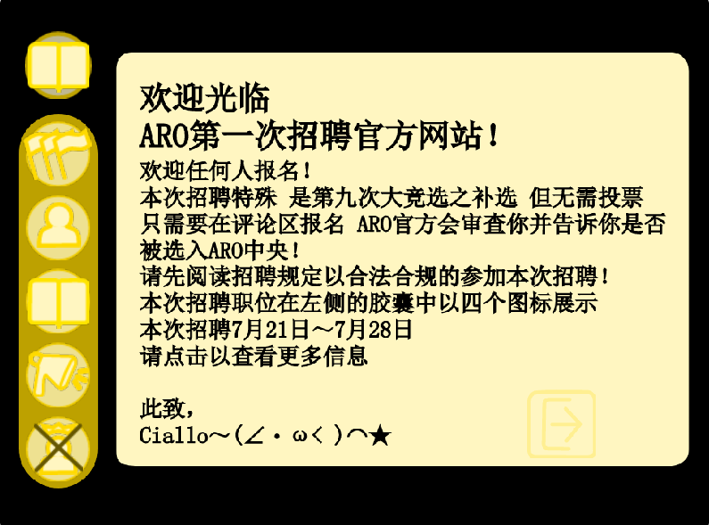
2026年7月21日，在《ARO大竞选结束公告》正式发布后，ARO将原《ARO大竞选官网》作品更改为《ARO大招聘官网》，正式展开ARO中央招聘工作。在《ARO大招聘官网》内，ARO宣布，向外界开放招聘的岗位，包括ARO浪潮委员会委员（三名）、ARO宣传部成员（三名）、ARO联合创作部成员（三名）与ARO档案部成员（五名）。
据《ARO大招聘官网》的相关信息，ARO浪潮委员会委员（全称基层及新生代相关事务负责委员会委员）的职责，是参与ARO各项基层活动；帮助各加盟组织纳新发展；在社区范围内大规模寻找优秀或有一定潜力的组织或人才，并说服他们加入ARO；说服“身边人”停止抄袭，并宣传抄袭的定义与反抄袭思想，并在其改邪归正后，引导其加入ARO。《ARO大招聘官网》要求ARO浪潮委员会委员的候选者，一周上线时间至少5天，保持活跃，且口才需要好。
在《ARO大招聘官网》的相关页面中，ARO方列举了其余职位的简略职责或要求。ARO宣传部成员的职责为“收集社区新闻、编写社区新闻草稿、对最终稿作出修订、招揽广告、赞助商；制作ARO宣传类作品、在各大组织和创作者的评论区下邀请他们加入ARO。”ARO联合创作部成员要求精通熟练美工、绘图、编程、音乐、设计中的任意一个方面。ARO档案部成员则需要“参与资料整理工作、记录ARO中央委员会的提议、议案、投票情况、每一票的详细信息，整理历史，聊天记录等”。
2026年7月28日，ARO中央招聘工作正式结束。此后，《ARO大招聘官网》没有被ARO取消发布，并在8月7日进行了最后一次重发。据《ARO大招聘官网》的相关页面，ARO宣传部成员的参选者仅为@岁月荣光和@HARRY两人，ARO联合创作部成员的参选者仅有@黑暗公主一人，而ARO浪潮委员会委员和ARO档案部成员，均无人参选。
ARO发布《ARO大竞选结束后相关事务之公告》与《ARO对于@青柠killer的态度与询问》公告¶
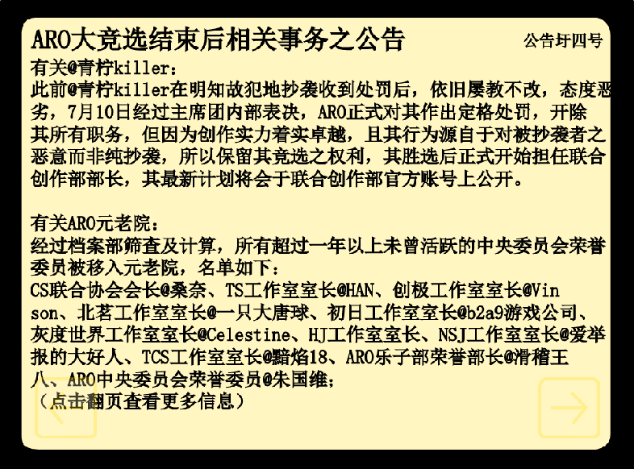
2026年7月21日3时26分，ARO日常事务负责委员@默麒通过ARO官方账号，发布《ARO大竞选结束后相关事务之公告》。公告涉及@青柠killer、ARO元老院、新增规定三个方面。@默麒在公告中表示：2026年7月10日，经主席团内部表决，涉嫌恶意抄袭的@青柠killer将被开除其所有原职务；ARO将所有超过一年以上未曾活跃的中央委员会荣誉委员移入元老院；ARO新增规定明确，任何因为突发原因无法充分活跃并履职的ARO中央领导，其职位将会在其任期内立刻冻结。《ARO大竞选结束后相关事务之公告》的相关内容如下：
有关@青柠killer：
此前@青柠killer在明知故犯地抄袭收到处罚后，依旧屡教不改，态度恶劣，7月10日经过主席团内部表决，ARO正式对其作出定格处罚，开除其所有职务，但因为创作实力着实卓越，且其行为源自于对被抄袭者之恶意而非纯抄袭，所以保留其竞选之权利，其胜选后正式开始担任联合创作部部长，其最新计划将会于联合创作部官方账号上公开。
有关ARO元老院：
经过档案部筛查及计算，所有超过一年以上未曾活跃的中央委员会荣誉委员被移入元老院，名单如下：
CS联合协会会长@桑奈、TS工作室室长@HAN、创极工作室室长@Vinson、北茗工作室室长@一只大唐球、初日工作室室长@b2a9游戏公司、灰度世界工作室室长@Celestine、HJ工作室室长、NSJ工作室室长@爱举报的大好人、TCS工作室室长@黯焰18、ARO乐子部荣誉部长@滑稽王八、ARO中央委员会荣誉委员@朱国维；
有关新增规定：
任何因为突发原因无法长时间活跃、有效履职的ARO中央领导，其职位将会在其任期内立刻冻结，不作任何改动，在其恢复活跃后恢复；
ARO日常事务负责委员@默麒
2026年7月21日
2026年7月29日22时，在《ARO大竞选结束后相关事务之公告》发布约9天后，ARO再次通过官方公告作品，发布《ARO对于@青柠killer的态度与询问》公告。ARO称，由于ARO安全委员会在商讨后认为，“公告圩四号”（指《ARO大竞选结束后相关事务之公告》）对@青柠killer的惩罚过轻，因此ARO将永久开除@青柠killer，且不得在未来录用。ARO在公告内，要求@青柠killer对2个问题进行明确回应，分别涉及“删除抄袭作品是真心悔改还是迫于压力”和“是否回应ARO要求，就辱骂诽谤行为向受辱者进行答复”方面。ARO威胁称：若@青柠killer回避问题，ARO将“对其开战”。《ARO对于@青柠killer的态度与询问》公告的详细内容如下：
《ARO对于@青柠killer的态度与询问》公告的详细内容（总计747字）
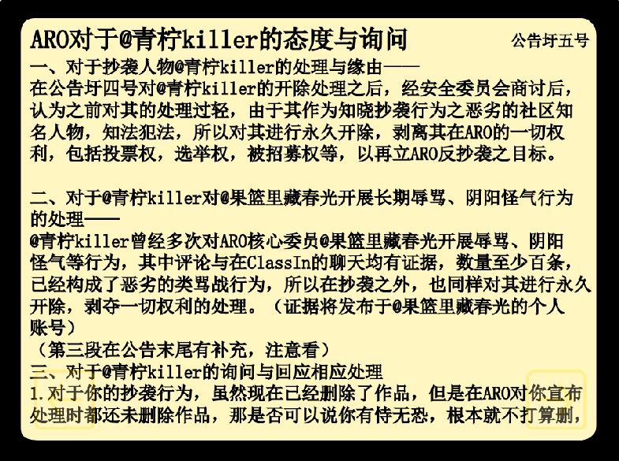
一、对于抄袭人物@青柠killer的处理与缘由——
在公告圩四号对@青柠killer的开除处理之后，经安全委员会商讨后，认为之前对其的处理过轻，由于其作为知晓抄袭行为之恶劣的社区知名人物，知法犯法，所以对其进行永久开除，剥离其在ARO的一切权利，包括投票权，选举权，被招募权等，以再立ARO反抄袭之目标。
二、对于@青柠killer对@果篮里藏春光开展长期辱骂、阴阳怪气行为的处理——
@青柠killer曾经多次对ARO核心委员@果篮里藏春光开展辱骂、阴阳怪气等行为，其中评论与在ClassIn的聊天均有证据，数量至少百条，已经构成了恶劣的类骂战行为，所以在抄袭之外，也同样对其进行永久开除，剥夺一切权利的处理。（证据将发布于@果篮里藏春光的个人账号）
（第三段在公告末尾有补充，注意看）
三、对于@青柠killer的询问与回应相应处理
1.对于你的抄袭行为，虽然现在已经删除了作品，但是在ARO对你宣布处理时都还未删除作品，那是否可以说你有恃无恐，根本就不打算删，只是如今迫于压力才删除，又或是其他原因，希望你给出一个答复；
2.对于你的类骂战行为，ARO的核心委员@果篮里藏春光对此十分不满，我们需要你给@果篮里藏春光一个答复，最好也回应你近一年以来的此类行为；
3.我方已有证据证明如今对@果篮里藏春光进行类骂战行为的@学员6809是你的小号，其中语言涉及极多诽谤行为，语言毫无根据，也希望你给出一个相应的答复，此类行为已经涉及部分法律，希望你谨慎对待；
4.如果@青柠killer无法给出合理或能够令人理解的答复，那么ARO正式对其开战，将其通缉，不断以正当理由将其举报。
三+：@青柠killer只是取消发布了作品，没有彻底删除，询问还要加上此条，以及前段的所有删除作品应改为取消发布作品
历史链接：3·7冰柠与果篮冲突事件¶
历史链接：3·7冰柠与果篮冲突事件
3·7冰柠与果篮冲突事件，是2026年3月初在ARO三月反@忆雨梦星政治风暴进行期间，发生的一次ARO内部人员争端，ARO中央委员会常务委员@冰柠killer（小号@乌龟小号、@账号已注销）自2025年暑假以来，就和@251a（现@果篮里藏春光）“结仇”并对其进行人身攻击，双方曾多次和解，但均未能真正重归于好，@冰柠killer曾在2025年9月28日，在251a抄袭风波结束后，嘲讽、辱骂、诅咒@251a。@251a由于认为自己理亏，有错在先，且不想在社区继续卷入争执，选择让步并和解。然而，@冰柠killer依然在此后，多次对251a进行嘲讽或贬低，令@251a感到不解与愤怒。


2026年3月7日，@冰柠killer对@果篮里藏春光进行诬蔑抹黑与恶意评论，标志着3·7冰柠与果篮冲突事件（《有道小图灵历史卷》称为“3·12冰柠与果篮直接冲突事件”）的开始。@冰柠killer语气轻蔑，使用“它”代指@果篮里藏春光和@小海，并称果篮和小海已“不是真人”，存在“AI幻觉”。@果篮里藏春光无比气愤，发布反讽评论进行回击，被@冰柠killer驳斥道“嗯，那你就受着......”。
@冰柠killer发布的的部分评论（经格式处理）
我之所以恨你们 是因为你们像人工稚能一样 还有AI幻觉（2026/03/07 13:31:55）
甚至我还会用第三方人称代词的它来顶替你们（2026/03/07 13:32:41）
你们已经不是真人了（2026/03/07 13:33:09 ）
小海也永退了（2026/03/07 13:33:22 ）
因为以一个高中生的智商一定可以理解我的话语 毕竟我只是一个初中生 <虽然现在还没上初中>（2026/03/07 13:34:13 ）
可是当我询问小海要不要把工作室还给我的时候 小海却说它无法做出准确的判断（2026/03/07 13:34:58 ）
当我继续说明是Charlie把工作室交给它的时 它任然没有给我一个是否答句 任然无法判断（2026/03/07 13:36:05 ）
就像一个刚刚上五年级的孩子一样（2026/03/07 13:36:42 ）
你等到开智了再回答我吧（2026/03/07 13:39:19）
@果篮里藏春光做出的反讽回应
欸，你真的觉得别人喜欢看你说的话吗？等开智？说话都不会开什么？是吧，我们连说话都不会，思考都不会。我们回答不了你提出的问题。
2026年3月12日，在3月7日的冲突后，3·7冰柠与果篮冲突事件更加升级。当日，@冰柠killer在社区发布作品《250a chu 生》。@冰柠killer以阴阳怪气的方式，对@果篮里藏春光进行贬低和辱骂。@果篮里藏春光恼怒至极，第一时间向朋友控诉。@忆雨梦星等人立即开始举报@冰柠killer，@土豆还是马铃薯在评论区回击对方。@冰柠killer迅速被封号，其作品被@冰柠killer主动取消发布（《有道小图灵历史卷》称其为“被举报下架”，但作品遭到下架，将被彻底删除，与事实不符）。
2026年3月12日之后，@冰柠killer使用小号“账号已注销”继续活动，并迅即被举报封禁。@冰柠killer此后在Classin群聊内上线活跃，并与@果篮里藏春光“近乎快要争吵”（《有道小图灵历史卷》说法），但双方争执最终平息。2026年3月13日，ARO在《ARO春节假期结束后人员及机构调动》公告中，宣布@冰柠killer因涉嫌违规行为，将被正式罢免职务，改为联合创作部成员，@乄忆雨梦星乄以ARO最高主席身份确认此事。3·7冰柠与果篮冲突事件的解决，成为了@忆雨梦星在3月16日之前对ARO职权进行的最后一次行使。2026年3月21日，@果篮里藏春光发现@冰柠killer将“下架作品”《250a chu 生》更换成了其他作品并再次发布，导致@果篮里藏春光对“下架”疑惑不解。@果篮里藏春光在《有道小图灵历史卷》中，称此事标志着3·7冰柠与果篮冲突事件“最终已经结束”。
相关史事：7·9青柠抄袭并公开果篮作品事件¶
相关史事：7·9青柠抄袭并公开果篮作品事件
2026年7月9日，据@果篮里藏春光在其编写的《有道小图灵历史卷》中所述，@果篮里藏春光在浏览社区时，“惊讶的”发现了一个抄袭自己闭源作品《孤·夜》的作品。涉事抄袭者正是长期对@果篮里藏春光进行骚扰的@青柠killer（原@冰柠killer）。@果篮里藏春光立刻发布评论进行警告，希望其删作，并第一时间将此事向ARO中央委员会ClassIn群聊中曝光，希望ARO作出处理。7·9青柠抄袭并公开果篮作品事件开始。
7月9日当日，@果篮里藏春光立刻向ARO中央发起罢免案，希望罢免@青柠killer在中央委员会的委员职务。ARO主席团随即部分通过该议案，决定将@青柠killer停职一周，撤销除中央委员会核心委员外的其他职务。然而，ARO最终没有作出彻底罢免@青柠killer的决定。@默麒在群聊中希望委员们理解主席团决定，称主席团选择不开除@青柠killer，是因为ARO“真的很缺乏创作者”。

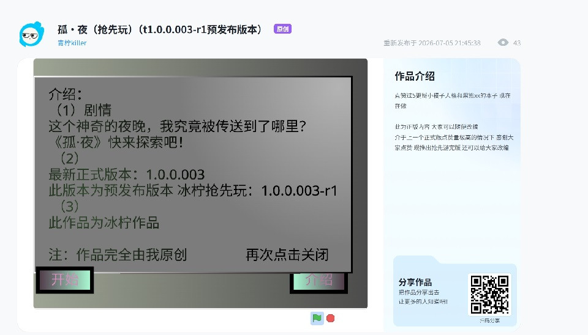

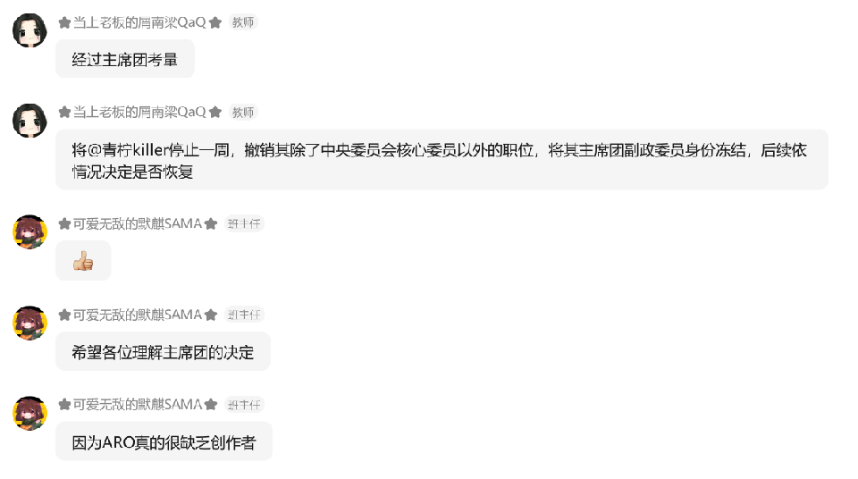

在@果篮里藏春光向ARO发起的罢免案部分通过后，然而，@青柠killer态度恶劣，拒绝承认自身错误。@青柠killer在7月10日上线，并公然在中央委员会发话，拒绝删除抄袭作品。@青柠killer还在同日将他的《孤·夜》进行开源发布，导致《孤·夜》迅速被其它抄袭者抄袭，产生恶劣影响。
7月10日当日，@果篮里藏春光向ARO中央继续控诉，并制作公告，在有1.8千点赞的主账号下发布作品《临时公告区》，严厉批判@青柠killer行径。然而，7月10日17时，@青柠killer抄袭@果篮里藏春光《临时公告区》作品，篡改内容，把发布者改为@青柠killer自己，将批判对象改成@果篮里藏春光。@青柠killer还在@果篮里藏春光作品下，复制并发布了@果篮里藏春光对其进行警告的评论，而@果篮里藏春光与ARO官方账号对@青柠killer的评论警告，均被@青柠killer删除。@青柠killer甚至还设置个人主页，宣称如果其《孤·夜》点赞超20，他将“教授”盗取未开源作品的秘密方法。

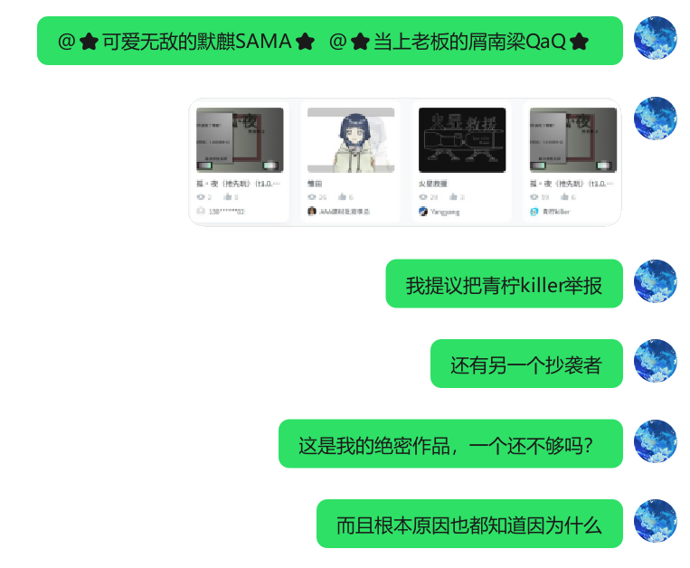

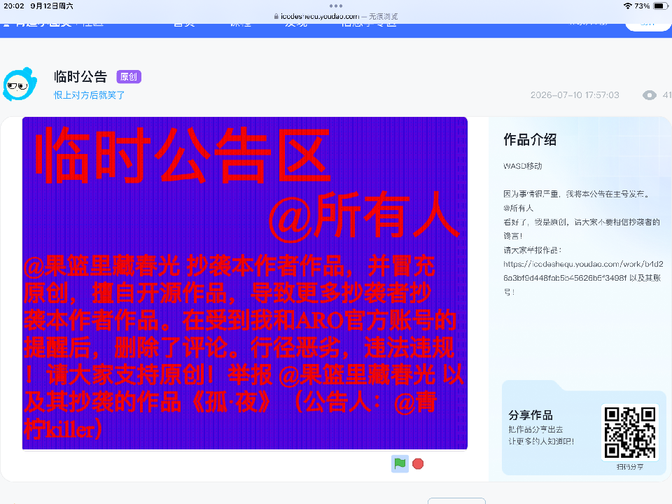

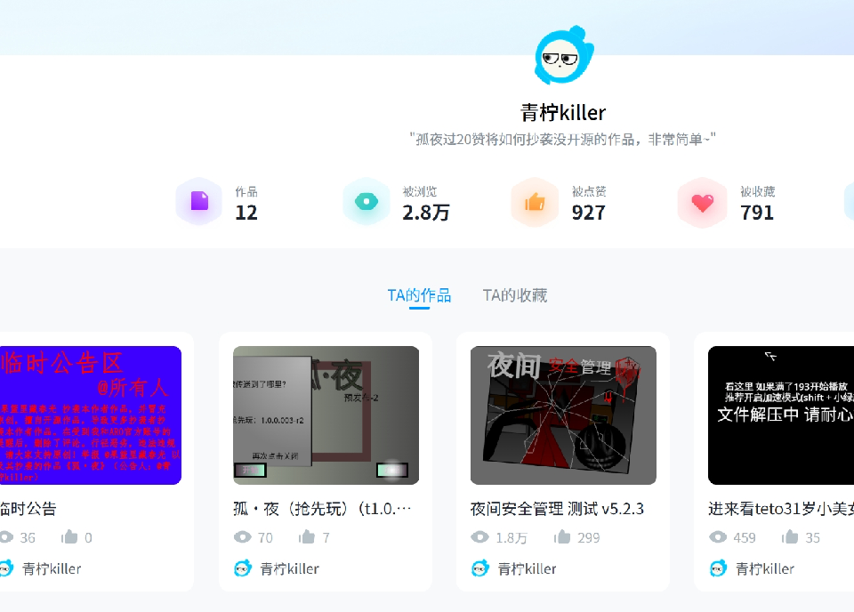
2026年7月10日19时，@青柠killer及其小号@乌龟小号均被@果篮里藏春光等人举报封禁。ARO主席团随即在内部表决中，正式对@青柠killer作出严厉处罚，开除@青柠killer所有职务。然而，ARO仍然决定，由于@青柠killer“创作实力着实卓越”，且其抄袭行为“非纯抄袭”，因此ARO继续保留其竞选权利。@青柠killer此后在ARO第九次大竞选中胜选，成为ARO新任联合创作部部长。

2026年7月21日3时26分，ARO在《ARO大竞选结束后相关事务之公告》中，宣布了ARO对@青柠killer的宽松处罚的相关内容。然而，@青柠killer并未作出改变。他使用小号在之后数天内，继续对@果篮里藏春光进行侵犯名誉权的诽谤行为。@青柠killer此举最终引发众怒。7月29日，ARO在《ARO对于@青柠killer的态度与询问》公告中宣布，ARO安全委员会决定永久开除@青柠killer，剥夺其被招募权等ARO相关权利。ARO在公告中，要求@青柠killer就若干问题作出答复，否则，ARO将正式对其开战。
在《ARO对于@青柠killer的态度与询问》公告发布后，@青柠killer在ARO公告区发布评论，称ARO将以“热寂或者熵增”作为可能结局，并表示：其不管怎么样，都喜欢“折磨裸篮”（指@果篮里藏春光）。@青柠killer此后改名@恨上对方后就笑了，在社区继续活动。《ARO对于@青柠killer的态度与询问》公告的发布，标志着7·9青柠抄袭并公开果篮作品事件迎来终结。
ARO“质询大会”的开展与《ARO八月初相关事务之公告》的发布¶
2026年8月5日凌晨，ARO官方账号更新其公告作品，宣布正式开展“质询大会”。ARO称，其将于当日向社区开放质询通道，普通用户可向ARO方面咨询ARO相关问题，ARO将“尽力回答并处理”。然而，ARO“质询大会”反响平平。当日全天，没有任何用户在ARO公告作品下进行质询。
2026年8月6日上午9时53分，在“质询大会”惨淡收场的次日。ARO更新官方公告作品中，发布《ARO八月初相关事务之公告》。公告将ARO神奇代码岛分部领导人@潘西和ARO日常相关事务负责委员@默麒将要宣布的两个事项并列。@潘西在公告中称：由于编程猫下属的社区功能“神奇代码岛”将会在2026年9月30日停运，ARO神奇代码岛分部将进入“冻结”状态。@默麒则在公告中表示，由于大量在线少儿编程社区已经没落乃至关停，ARO将关停相关分部，并呼吁群众从有道小图灵迁移至其他治理良好的社区，以在有道小图灵社区未来可能的覆灭中明哲保身。《ARO八月初相关事务之公告》的详细内容如下：

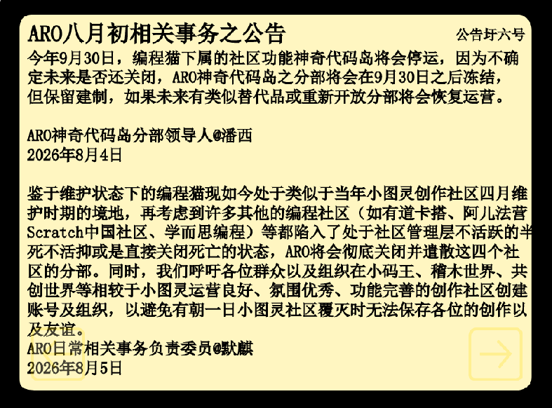
今年9月30日，编程猫下属的社区功能神奇代码岛将会停运，因为不确定未来是否还关闭，ARO神奇代码岛之分部将会在9月30日之后冻结，但保留建制，如果未来有类似替代品或重新开放分部将会恢复运营。
ARO神奇代码岛分部领导人@潘西
2026年8月4日
鉴于维护状态下的编程猫现如今处于类似于当年小图灵创作社区四月维护时期的境地，再考虑到许多其他的编程社区（如有道卡搭、阿儿法营Scratch中国社区、学而思编程）等都陷入了处于社区管理层不活跃的半死不活抑或是直接关闭死亡的状态，ARO将会彻底关闭并遣散这四个社区的分部。同时，我们呼吁各位群众以及组织在小码王、稽木世界、共创世界等相较于小图灵运营良好、氛围优秀、功能完善的创作社区创建账号及组织，以避免有朝一日小图灵社区覆灭时无法保存各位的创作以及友谊。
ARO日常相关事务负责委员@默麒
2026年8月5日